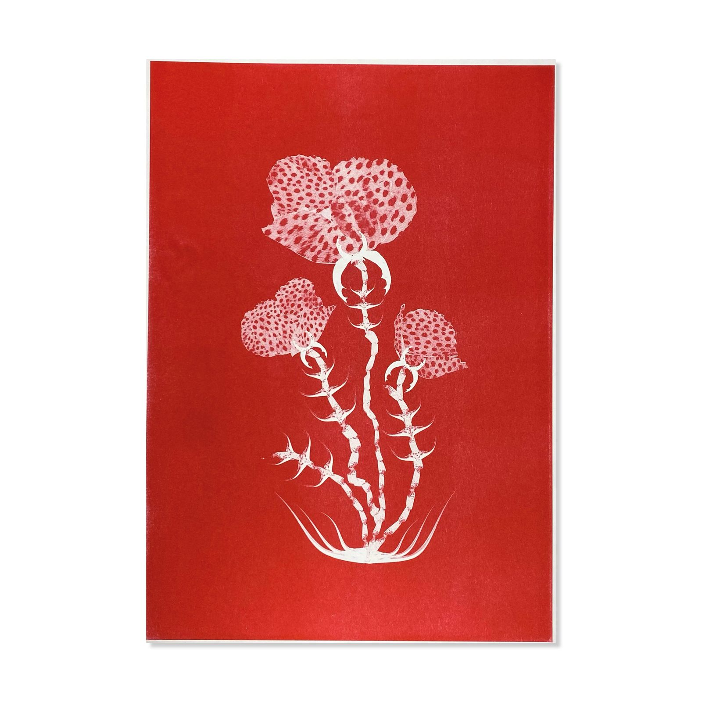
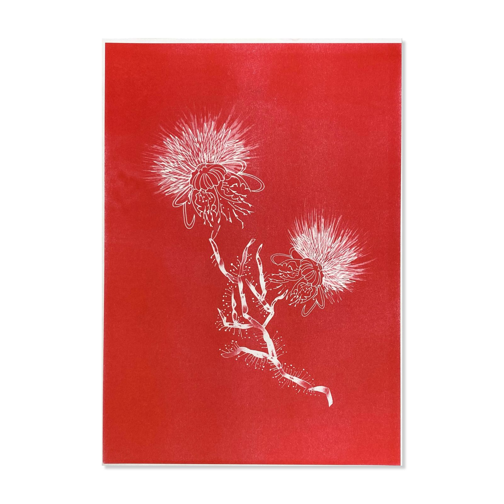
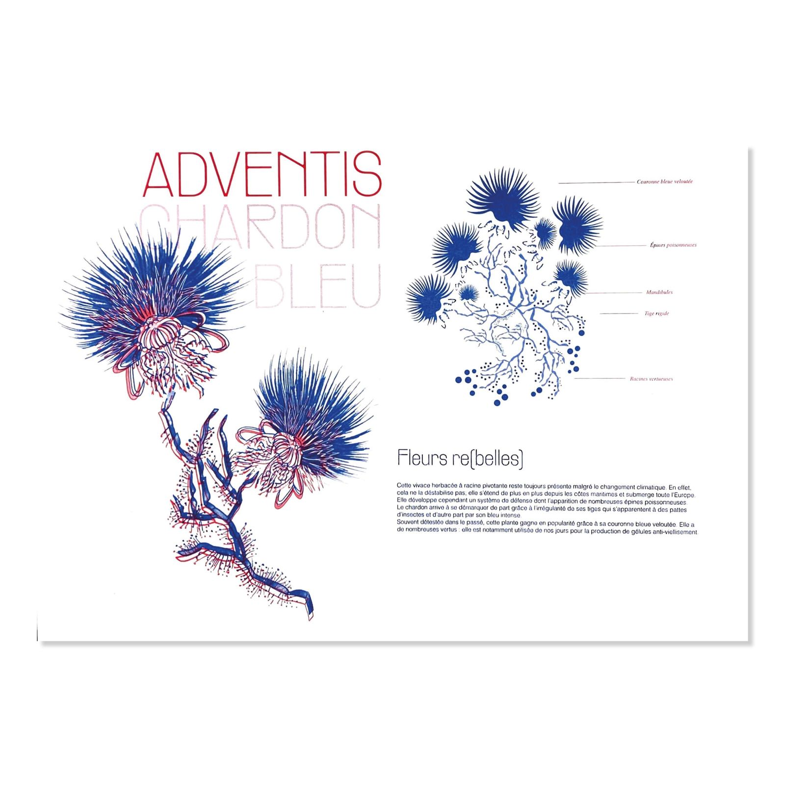
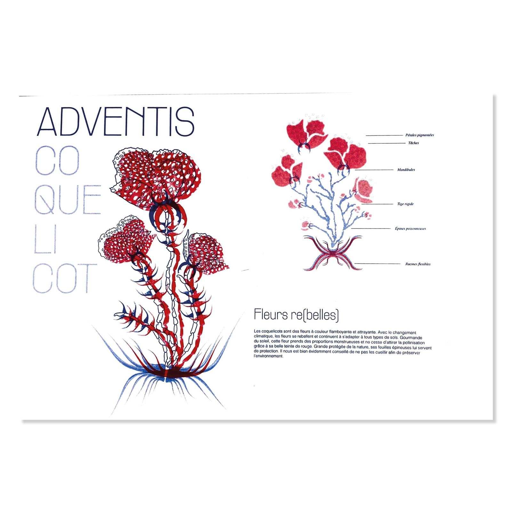
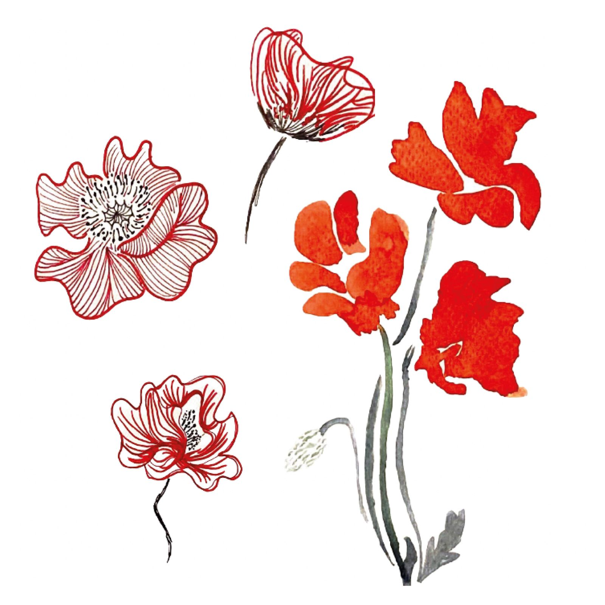
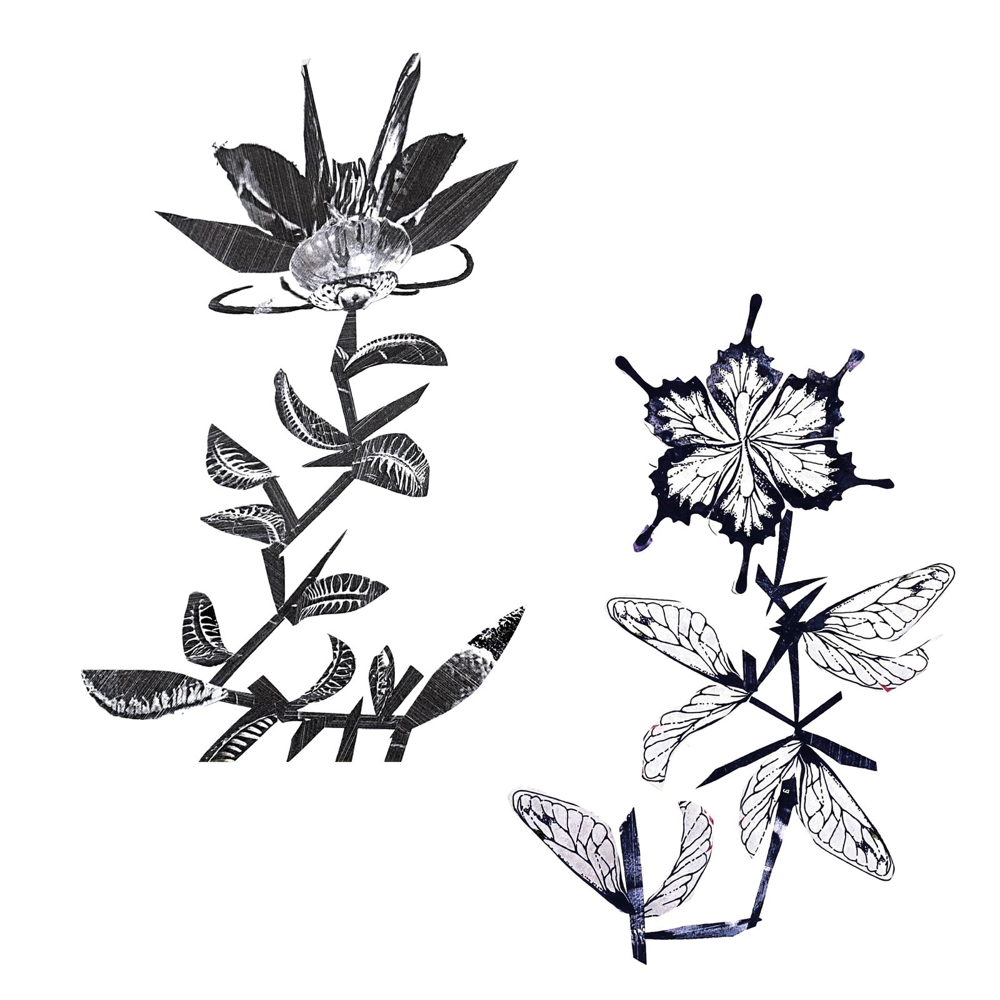

Imaginary Herbarium
Following a study of the consequences of our activity
on the planet, we were asked to share them, imagining the
future of flowers and plants. Through these 3 productions,
I wanted to put the weeds that are not well liked back to the
fore. They are beautified. It is through the hybridization between
weeds and insects that I wanted to transcribe the idea of
flowers that having mutated in order to adapt to their environment.
I wanted to create something reassuring and positive : sometimes
they become increasingly majestic, sometimes they develop a system of
defense and adaptation to their different environment.